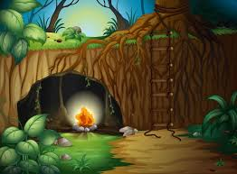

Em um antigo diário encontrado na biblioteca, você descobre uma pista sobre uma floresta encantada cheia de segredos. Determinado a desbravar essa floresta, você inicia sua jornada.
Na Floresta do Norte, você encontra uma clareira com duas trilhas. Uma leva a um antigo templo, e a outra a uma caverna misteriosa.

Na Floresta do Sul, você chega a um lago mágico. A carta indica que o próximo passo é encontrar uma pista escondida nas proximidades. Onde você começa?
No templo antigo, você descobre uma inscrição em uma pedra que revela que a próxima pista está na Floresta do Sul.

Você decide que a floresta é muito perigosa e volta para casa, mas sempre se pergunta o que teria descoberto.
Entre as árvores antigas, você encontra um pergaminho escondido que indica a Floresta do Sul como o próximo destino.
Explorando a margem do lago, você encontra uma estranha entrada para uma gruta, mas não há pistas adicionais dentro.
Na Floresta do Sul, você se depara com um rio que se divide em dois caminhos.
De volta às árvores antigas, você encontra um mapa detalhado que leva a uma nova área na Floresta do Sul.
O rio à esquerda leva você a uma clareira mágica onde um portal revela a entrada de uma caverna secreta.
O rio à direita termina em uma área pantanosa sem pistas adicionais.

Dentro da caverna secreta, você descobre uma floresta encantada com tesouros e segredos antigos. Decidido a proteger e explorar esse lugar mágico, você se torna o guardião da floresta.
Retornando ao rio e escolhendo o caminho correto, você encontra a clareira mágica e a caverna secreta.
